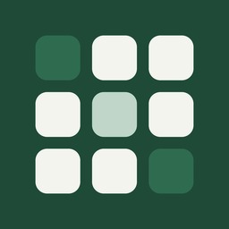

Sereno Sudoku
Sudoku y nonograma
Cada tablero tiene una solución única y sale por pura deducción. Las pistas te enseñan la jugada en vez de resolverla por ti, así que se aprende jugando. Con reto diario, tres temas y seis idiomas.
Ver en el App Store